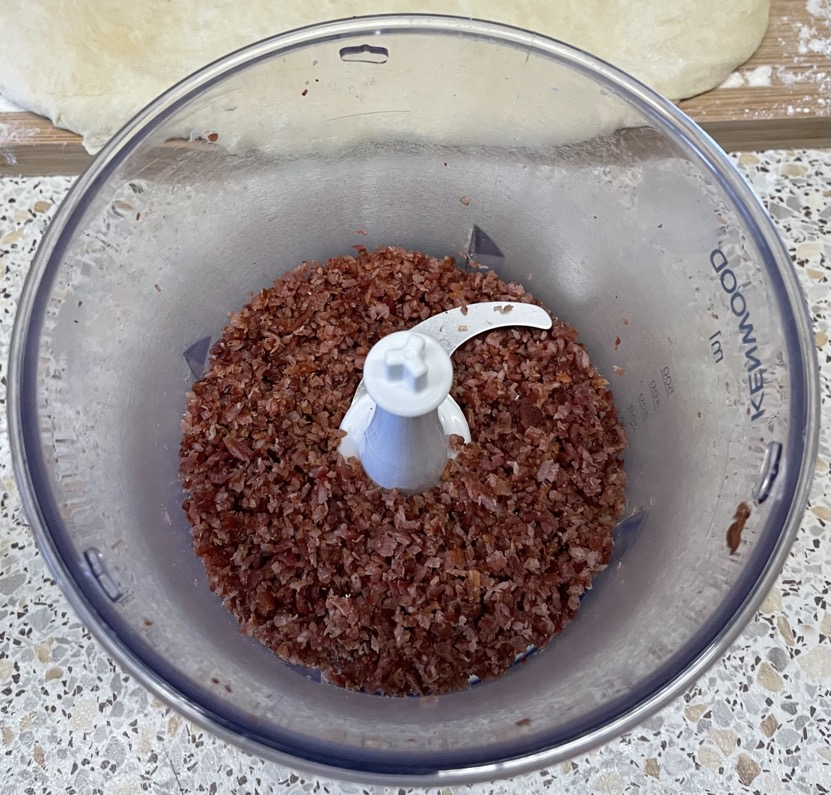
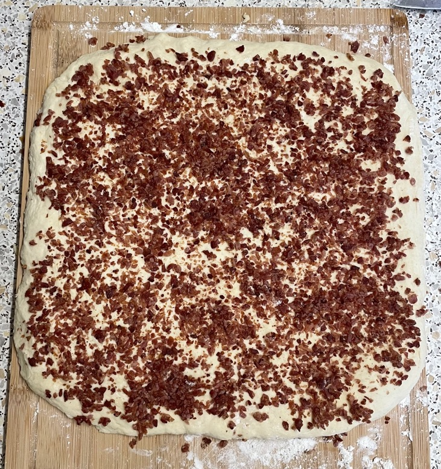
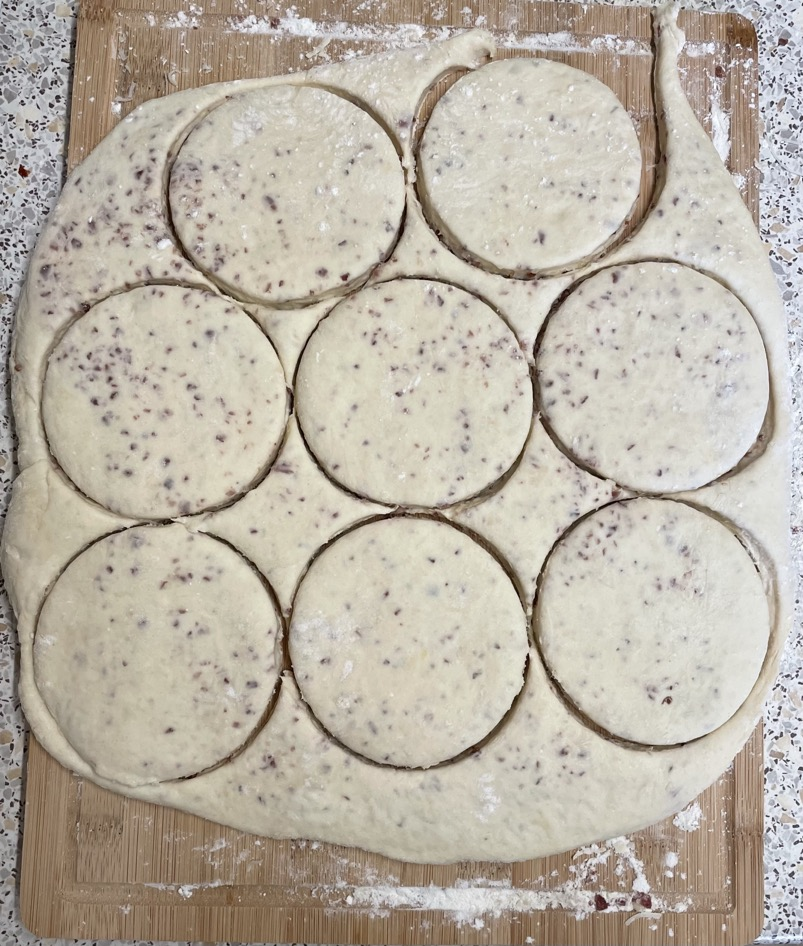
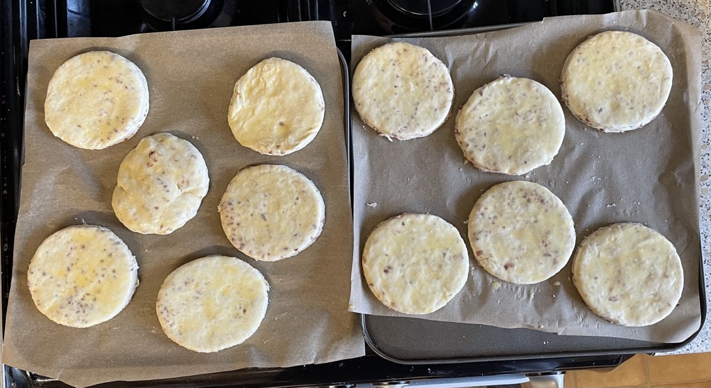
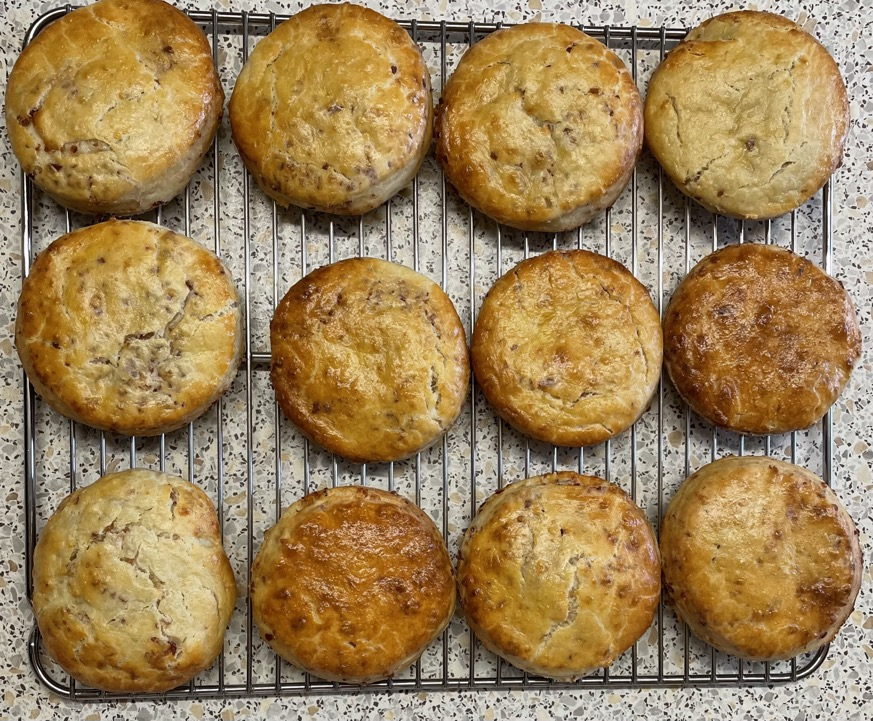

Bacon & parmesan biscuits
Bacon
- Place 4 rashers bacon flat in 30 cm pan
- Heat on medium heat for 4 mins until sizzling
- Reduce heat to medium-low heat
- Cook for 12 mins until fat is rendered, flipping as required
- Drain rashers on paper towel
Buttermilk
- Try milk & vinegar instead next time
- Whisk together
- 240ml (233g) soured cream
- 160ml (165g) Greek yogurt
- 80ml (82g) milk
Biscuits
- Mix in bowl
- 360g plain flour
- 1 tbsp baking powder
- ¾ tsp salt
- ¼ tsp baking soda
- Add and rub until crumbs
- 110g unsalted butter cold and cubed
- Add buttermilk mixture and fold until combined
- Roll dough to make 30cm square
- Fold twice into thirds to make 9 layers
- Roll dough to make 30cm square
- Sprinkle over
- 8 rashers bacon cooked, chopped & blitzed
- 60g parmesan finely grated
- Fold twice into thirds to make 9 layers
- Roll dough to make 30cm square
- Cut out into 10cm rounds
- Roll out remaining dough and cut into rounds
Baking
- Place rounds on baking paper
- Brush tops with beaten egg or melted butter
- Bake at 200°C for 15 mins until golden brown and risen
- Rotate trays and switch between shelves halfway through cooking
Notes
- Made: 2 Jan 2023
- Original recipe: The Food Lab, p163
Pics




